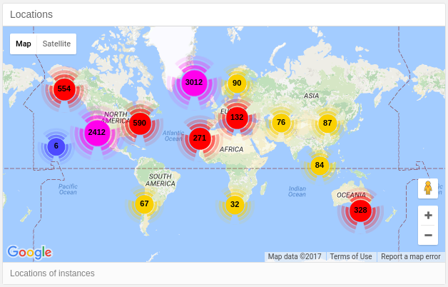

class: center, middle  # Home Assistant - Intro ### Awaken your home --- .header[] # Agenda 1. Einführung 2. Installation/Konfiguration 3. Automation 4. Integration --- # Über mich - B. Sc. CS BUAS, B. Sc. ME BUAS - [Affolter Engineering](http://affolter-engineering.ch/) - Home Assistant Developer - Fedora Security Lab / Fedora Security Lab Test bench - Package Maintainer (ca. 190 packages) - Alpine Linux contributor --- .header[] # How to get in touch with me? - **IRC**: faffolter - **Mail**: mail@fabian-affolter.ch - **Jabber**: fab@swissjabber.org - **Web**: [http://fabian-affolter.ch](http://fabian-affolter.ch) --- .header[] # Internet of things .left-column[ - Lampen - Schalter - Thermostat - Wasserkocher - Zahnbürste - Kameras - Staubsauger ] .right-column[ - Waschmaschine - Bewässerung - Schlösser - Temperatur - Türen - Tierfütterung - ... ] --- .header[] # Protokolle & Busse - SOHO-Einsatz - Bluetooth, Bluetooth LE, IEEE 802.x, Z-Wave, X10, KNX, ZigBee, IR, LoRA, SCS, Universal Powerline Bus, Insteon, EnOcean, C-BUS, etc. -- - Industrieller Einsatz - CAN, Profibus, Modbus, Interbus, EtherCAT, ControlNet, SafetyBUS, BitBus, etc. --- .header[] # Home Assistant - Python 3 - 600 Integrationen - Apache 2.0 (früher MIT) - 3.5 Jahre alt (Erster Commit: 17. September 2013) - Validierung mit PEP8 / PyFlakes / PyLint - 94 % Test coverage (ohne Integrationen) - Automatische Abhängigkeitsverwaltung --- background-image: url(images/components.png) --- .header[] # Verfügbare Implementierungen - MQTT, Insteon, Modbus, RFXtrx, Z-Wave, ZigBee, SCSGate, KNX -- - Arduino, Raspberry PI GPIO, Cubieboard, Beaglebone Black -- - Webservices .footnote[Component overview: https://home-assistant.io/components/#all] --- .header[] ## Wo?  --- .header[] # Andere Statistiken - Virtual Environment: 10 % - Docker: 10 % - Raspbian/Debian 8: 80 % --- .header[] # Schnittstellen - Websocket API - RESTful API - Python API - Server-sent events --- class: middle .header[] - **Dokumentation**: <br/> [https://home-assistant.io/](https://home-assistant.io/) - **Community**: <br/> [https://community.home-assistant.io/](https://community.home-assistant.io/) - **Chat**: <br/> [https://gitter.im/home-assistant/home-assistant](https://gitter.im/home-assistant/home-assistant) --- class: center, middle <img src="images/ha-logo.png" alt="Home Assistant Logo" style="width:400px;"> # [https://home-assistant.io](https://home-assistant.io.org)